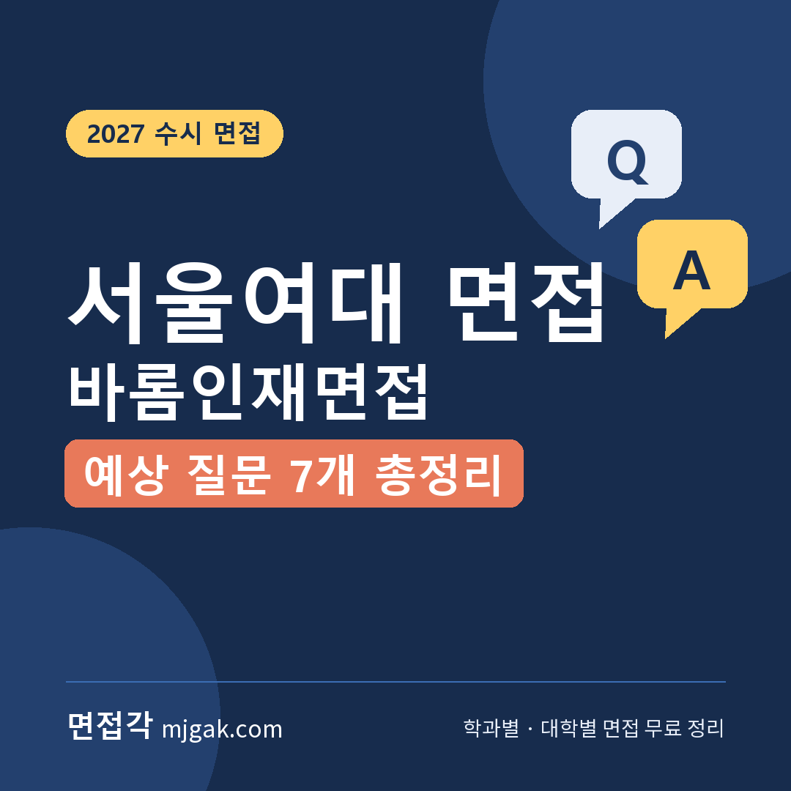
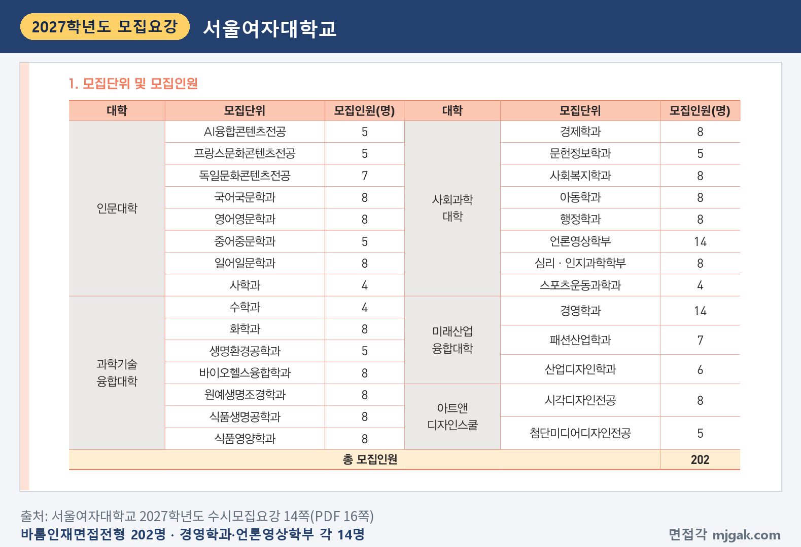
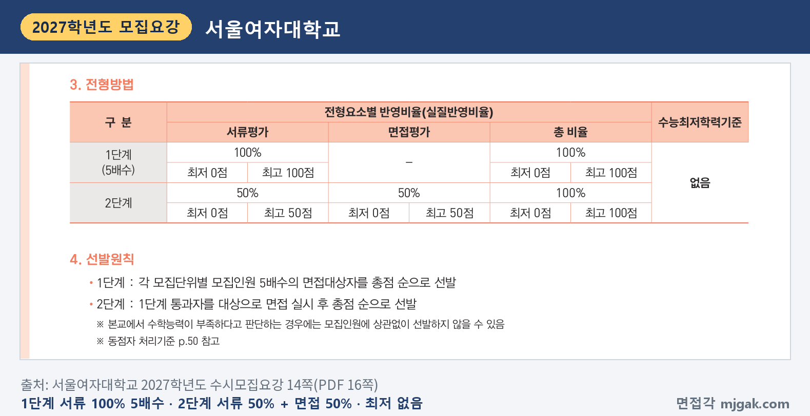
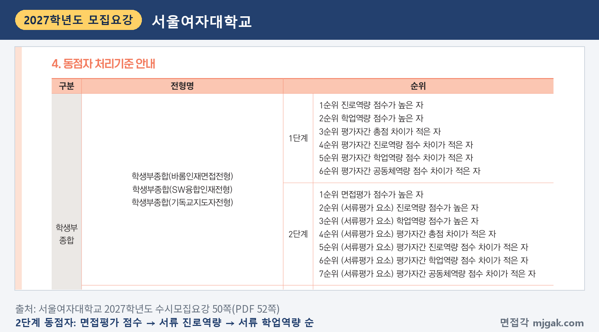
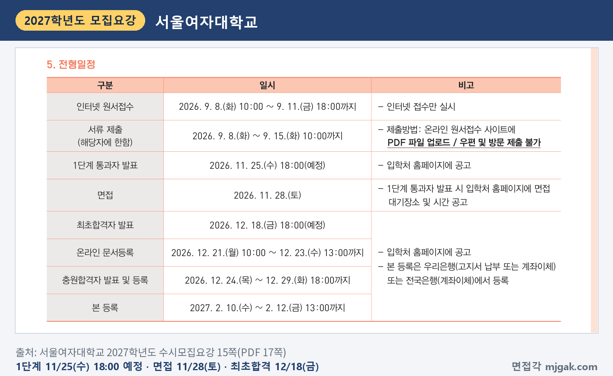
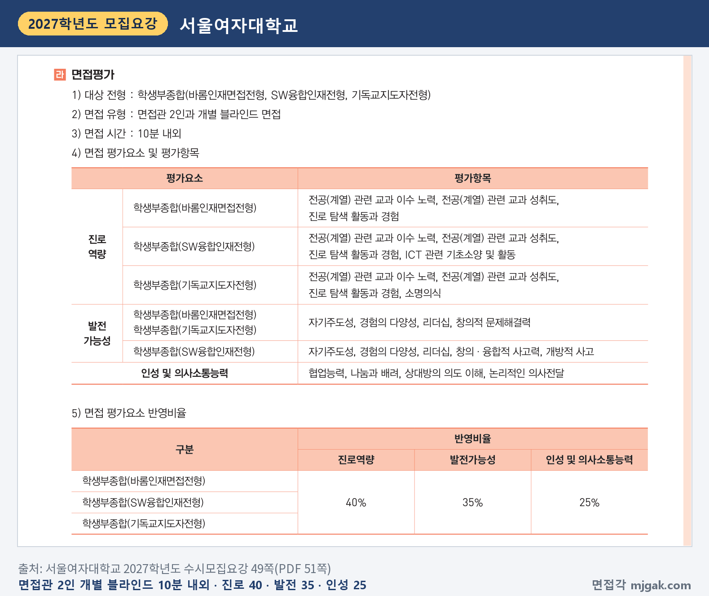
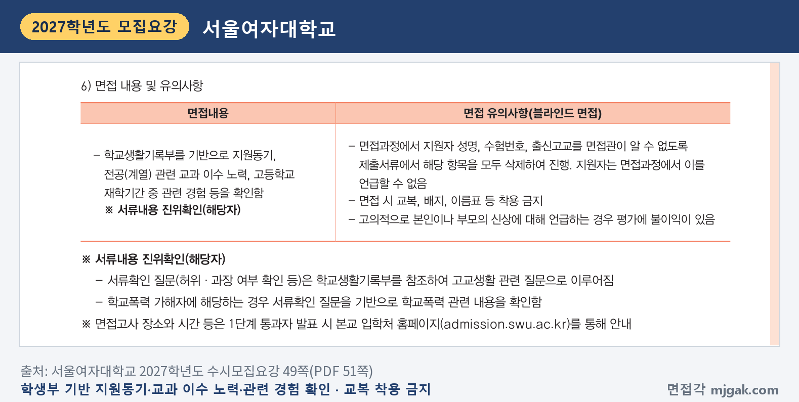
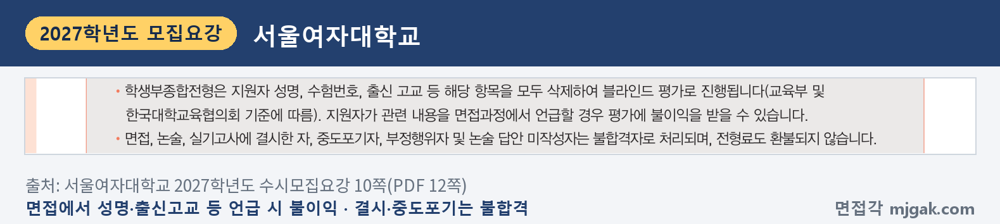
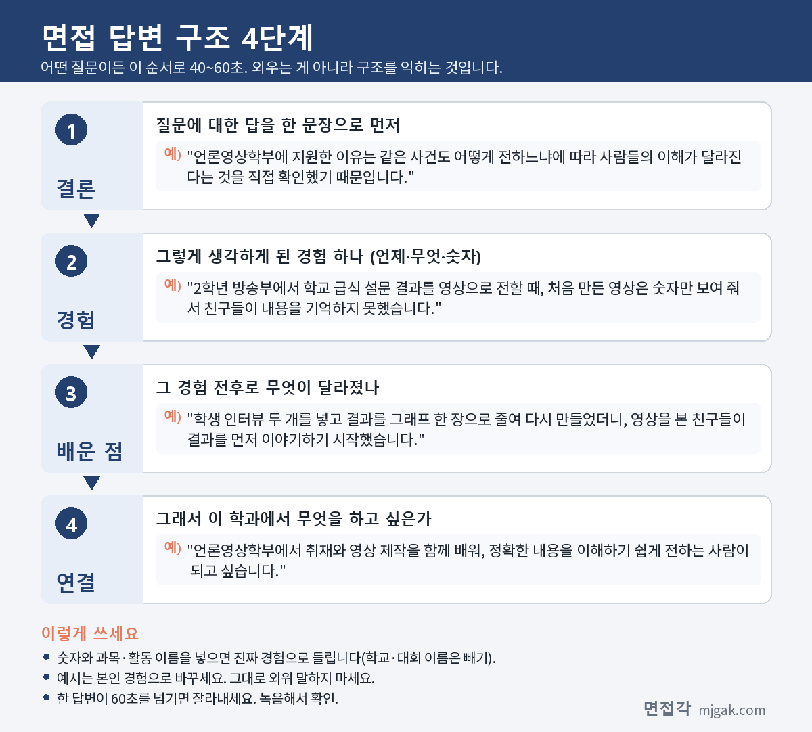

Ctrl+V (서식 유지됨)제목
본문 (이 영역 전체가 복사됩니다)
📷 여기에 이미지 넣기 — 썸네일 — thumb-swu.png (대표 이미지로 지정)
서울여대 바롬인재면접전형에서 먼저 챙길 것은 날짜입니다. 수능은 11월 19일(목), 1단계 통과자 발표는 11월 25일(수) 18시(예정), 면접은 11월 28일(토)입니다. 2단계는 서류평가 50%와 면접평가 50%를 합산하고, 면접은 면접관 2인과 10분 내외로 보는 개별 블라인드 면접입니다. 수능최저학력기준은 없습니다. 서울여자대학교 2027학년도 수시모집요강을 바탕으로 전형 방법과 일정, 면접 방식, 예상 질문 7개, 준비 순서를 정리했습니다. 바롬인재면접전형 지원자가 읽으시면 됩니다.
1. 바롬인재면접전형, 2027학년도에는 어떻게 보나
바롬인재면접전형은 학생부종합전형으로 202명을 뽑습니다. 2026학년도 210명에서 8명 줄었습니다(2쪽). 인재상은 "충실한 학교생활을 통하여 관심 분야에 대한 탐색과 기초 학업역량을 균형 있게 발전시킨 바른 인재"입니다(14쪽).
인원이 많은 곳은 경영학과와 언론영상학부 각 14명입니다. 국어국문학과, 영어영문학과, 일어일문학과, 화학과, 바이오헬스융합학과, 원예생명조경학과, 식품생명공학과, 식품영양학과, 경제학과, 사회복지학과, 아동학과, 행정학과, 심리·인지과학학부, 시각디자인전공은 각 8명입니다. 나머지 모집단위는 4~7명입니다(14쪽). 고등학교 졸업(예정)자와 법령에 따라 같은 수준 이상의 학력을 인정받은 사람이 지원할 수 있습니다(14쪽).
📷 여기에 이미지 넣기 — 캡처 1 — 서울여자대학교 2027학년도 수시모집요강 14쪽(PDF 16쪽): swu-2027-barom-units.png
전형 방법은 1단계에서 서류평가 100%로 모집단위별 모집인원의 5배수를 면접대상자로 뽑고, 2단계에서 서류평가 50%와 면접평가 50%를 합산해 총점 순으로 뽑습니다(14쪽). 전형 요약 표에는 2단계가 "1단계 50% + 면접 50%"로 적혀 있습니다(3쪽). 모집인원에 5를 곱해 이 글에서 계산하면, 1단계 통과 규모는 경영학과·언론영상학부(각 14명) 70명, 8명을 뽑는 모집단위 40명입니다.
📷 여기에 이미지 넣기 — 캡처 2 — 서울여자대학교 2027학년도 수시모집요강 14쪽(PDF 16쪽): swu-2027-barom-method.png
서류평가는 학교생활기록부를 바탕으로 진로역량 40%, 학업역량 35%, 공동체역량 25%를 정성적으로 종합평가하고, 블라인드로 진행합니다(14쪽). 학교생활기록부에 학교폭력 관련 기재사항이 있으면 각 단계에서 정성평가로 반영합니다(3·15쪽).
2단계 동점자는 면접평가 점수가 높은 사람, 서류평가 요소 중 진로역량 점수가 높은 사람, 학업역량 점수가 높은 사람 순(이후 순위도 모집요강에 있음)으로 가리고, 1단계 동점자는 진로역량, 학업역량 점수 등의 순으로 봅니다(50쪽).
📷 여기에 이미지 넣기 — 캡처 3 — 서울여자대학교 2027학년도 수시모집요강 50쪽(PDF 52쪽): swu-2027-barom-tie.png
2. 언제 보나: 11월 25일(수) 1단계 발표, 11월 28일(토) 면접
일정은 날짜순으로 이렇습니다(5·15쪽).
- 11월 19일(목): 수능
- 11월 25일(수) 18:00(예정): 1단계 통과자 발표, 입학처 홈페이지에 공고
- 11월 28일(토): 면접
- 12월 18일(금) 18:00(예정): 최초합격자 발표
1단계 통과자 발표 때 면접 대기장소와 시간을 함께 공고하고, 공지된 개인별 면접일정은 절대 변경할 수 없습니다(5쪽). 면접에 결시하거나 중도에 포기하면 불합격 처리되며 전형료도 돌려주지 않습니다(10쪽).
📷 여기에 이미지 넣기 — 캡처 4 — 서울여자대학교 2027학년도 수시모집요강 15쪽(PDF 17쪽): swu-2027-barom-schedule.png
3. 면접은 어떻게 보나
면접은 면접관 2인과 보는 개별 블라인드 면접이고, 시간은 10분 내외입니다(49쪽). 모집요강이 밝힌 면접 내용은 "학교생활기록부를 기반으로 지원동기, 전공(계열) 관련 교과 이수 노력, 고등학교 재학기간 중 관련 경험 등을 확인함"이고, 해당자에게는 서류내용 진위확인도 합니다. 서류확인 질문(허위·과장 여부 확인 등)은 학교생활기록부를 참조한 고교생활 관련 질문으로 이루어지고, 학교폭력 가해자에 해당하면 서류확인 질문으로 학교폭력 관련 내용을 확인합니다(49쪽). 학생부종합전형 면접평가에는 학외인사 참관을 운영할 수 있습니다(6쪽).
평가 요소와 반영비율은 다음과 같습니다(49쪽).
- 진로역량 40%: 전공(계열) 관련 교과 이수 노력, 전공(계열) 관련 교과 성취도, 진로 탐색 활동과 경험
- 발전가능성 35%: 자기주도성, 경험의 다양성, 리더십, 창의적 문제해결력
- 인성 및 의사소통능력 25%: 협업능력, 나눔과 배려, 상대방의 의도 이해, 논리적인 의사전달
📷 여기에 이미지 넣기 — 캡처 5 — 서울여자대학교 2027학년도 수시모집요강 49쪽(PDF 51쪽): swu-2027-barom-interview.png
블라인드 면접이라 지원자 성명, 수험번호, 출신고교를 면접관이 알 수 없도록 제출서류에서 지우고 진행하며, 지원자는 면접에서 이를 언급할 수 없습니다. 면접 때 교복, 배지, 이름표 등은 착용할 수 없고, 고의로 본인이나 부모의 신상을 언급하면 평가에 불이익이 있습니다(49쪽).
📷 여기에 이미지 넣기 — 캡처 6 — 서울여자대학교 2027학년도 수시모집요강 49쪽(PDF 51쪽): swu-2027-barom-blind.png
수시모집 지원자 유의사항에도 성명, 수험번호, 출신 고교 등을 면접과정에서 언급하면 평가에 불이익을 받을 수 있다고 적혀 있습니다(10쪽).
📷 여기에 이미지 넣기 — 캡처 7 — 서울여자대학교 2027학년도 수시모집요강 10쪽(PDF 12쪽): swu-2027-barom-rule.png
4. 평가 기준에서 나올 예상 질문 7개와 답변법
서울여대는 모집요강에 면접 질문 예시를 공개하지 않았습니다. 아래 7개는 위 평가 항목과 면접 내용으로 정리한 예상 질문입니다. "○○" 자리에는 내 학생부의 과목과 활동이 들어갑니다. 예시 답변은 모집단위를 바꿔 가며 쓴 가상의 예시이니 반드시 본인 경험으로 바꾸세요.
▶ 질문 1. ○○학과에 지원한 동기를 학생부 활동과 연결해 말해 보세요. (면접 내용: 지원동기, 진로역량)
왜 묻나: 모집요강이 밝힌 면접 내용의 첫 항목이 "지원동기"입니다. 관심이 어디서 생겼고 학교생활에서 어떻게 확인했는지를 봅니다.
답변 구조: 지원 이유 한 문장 → 관심을 확인한 학생부 장면 → 그때 바꾼 것 → 학과에서 배울 것과 연결.
답변 예시 (언론영상학부):
"언론영상학부에 지원한 이유는 같은 사건도 어떻게 전하느냐에 따라 사람들의 이해가 달라진다는 것을 직접 확인했기 때문입니다. 2학년 방송부에서 학교 급식 설문 결과를 영상으로 전할 때, 처음 만든 영상은 숫자만 보여 줘서 친구들이 내용을 기억하지 못했습니다. 학생 인터뷰 두 개를 넣고 결과를 그래프 한 장으로 줄여 다시 만들었더니, 영상을 본 친구들이 결과를 먼저 이야기하기 시작했습니다. 언론영상학부에서 취재와 영상 제작을 함께 배워, 정확한 내용을 이해하기 쉽게 전하는 사람이 되고 싶습니다."
주의: "어릴 때부터 방송을 좋아해서"로 끝내지 말고, 그 관심을 학교생활에서 확인한 장면을 붙이세요.
▶ 질문 2. ○○학과와 관련해 어떤 과목을 골라 들었고, 그 과목에서 무엇을 배웠나요? (진로역량: 전공(계열) 관련 교과 이수 노력, 교과 성취도)
왜 묻나: 면접 내용에 "전공(계열) 관련 교과 이수 노력"이 직접 들어 있습니다. 과목을 고른 이유와 성취를 올리려 한 노력을 봅니다.
답변 구조: 고른 과목과 이유 → 그 과목에서 학과와 이어진 배움 하나 → 어려웠던 점과 바꾼 공부 방법 → 학과 공부와 연결.
답변 예시 (식품영양학과):
"식품영양학과 공부의 기초가 화학과 생명과학이라고 생각해 2학년 때 두 과목을 함께 골랐습니다. 생명과학에서 소화 효소를 배울 때 단백질이 어떻게 잘게 나뉘는지 궁금해, 화학 시간에 배운 결합 개념으로 다시 정리해 발표했습니다. 화학은 1학기에 반응식 문제를 자주 틀려서, 2학기에는 단원마다 반응식을 손으로 다시 써 보는 노트를 만들었습니다. 식품영양학과에서 영양소가 몸속에서 어떻게 쓰이는지 화학적으로 이해하고 싶습니다."
주의: 과목 이름만 나열하지 말고, 그 과목을 고른 이유와 배운 내용 하나를 함께 말하세요.
▶ 질문 3. 학생부에 적힌 ○○ 활동에서 본인이 직접 한 일은 무엇인가요? (서류내용 진위확인, 진로역량: 진로 탐색 활동과 경험)
왜 묻나: 모집요강이 밝힌 서류확인 질문은 "학교생활기록부를 참조하여 고교생활 관련 질문으로" 이루어집니다. 모둠 활동이었다면 내 역할을 내 말로 설명할 수 있는지를 봅니다.
답변 구조: 활동 주제 한 문장 → 내가 맡은 일 → 막혔던 지점과 해결 → 결과 → 그 활동이 진로에 준 영향.
답변 예시 (심리·인지과학학부):
"모둠에서 시험 기간 수면 시간과 집중도의 관계를 조사했고, 저는 설문 문항을 만들고 결과를 정리하는 일을 맡았습니다. 처음 만든 문항이 '잠을 충분히 자나요?'라서 사람마다 기준이 달랐습니다. 그래서 '어젯밤 몇 시간 잤나요?'처럼 숫자로 답하는 문항으로 바꿔 다시 조사했고, 친구 스물다섯 명의 답을 표로 정리했습니다. 질문을 어떻게 만드느냐에 따라 결과가 달라진다는 것을 알게 됐고, 심리·인지과학학부에서 사람의 마음을 재는 방법을 제대로 배우고 싶어졌습니다."
주의: "저희 모둠은"으로 시작하면 내 역할이 흐려집니다. "저는 ○○을 맡았습니다"로 시작하세요.
📷 여기에 이미지 넣기 — 이미지 1 — 제미나이 생성: 햇살 드는 도서관 창가 라운지에서 마이크·캠코더·과일 바구니와 주방 저울·뇌 모형·책 더미·라벨 없는 막대그래프·나무 블록 옆에서 답하는 여학생(실사) / "제미나이 프롬프트 1"
▶ 질문 4. 누가 시키지 않았는데 스스로 찾아보거나 시작한 공부가 있나요? (발전가능성: 자기주도성)
왜 묻나: 발전가능성(35%)의 첫 항목이 "자기주도성"입니다. 궁금한 것을 스스로 찾아보고 행동으로 옮긴 과정을 봅니다.
답변 구조: 처음 궁금했던 것 → 스스로 해 본 일 → 알게 된 것 → 그다음에 한 행동 → 학과와 연결.
답변 예시 (문헌정보학과):
"도서부에서 대출 기록을 정리하다가, 학생들이 어떤 책을 빌리는지 궁금해졌습니다. 아무도 시키지 않았지만 한 학기 대출 목록을 분야별로 나눠 세어 봤고, 소설에 비해 과학 분야 대출은 열 권도 되지 않는다는 것을 알았습니다. 그래서 과학 선생님께 추천 도서 열 권을 받아 '이달의 과학책' 코너를 만들었고, 다음 달 과학 분야 대출이 두 배 가까이 늘었습니다. 문헌정보학과에서 사람들이 필요한 정보를 찾아가도록 돕는 방법을 배우고 싶습니다."
주의: "원래 책을 좋아해서"로 시작하지 말고, 스스로 시작한 행동 하나를 앞에 두세요.
▶ 질문 5. 활동하다 예상하지 못한 문제가 생겼을 때 어떻게 해결했나요? (발전가능성: 창의적 문제해결력, 경험의 다양성)
왜 묻나: 발전가능성에 "창의적 문제해결력"과 "경험의 다양성"이 있습니다. 문제의 원인을 어떻게 찾았고 무엇을 바꿨는지를 봅니다.
답변 구조: 상황과 문제 → 원인을 찾은 방법 → 바꾼 것 → 결과 → 배운 점.
답변 예시 (경영학과):
"학급 자율활동으로 축제 때 중고 물품 바자회를 열었는데, 첫날 오전에 팔린 물건이 다섯 개뿐이었습니다. 지나가는 학생들에게 물어보니 가격표가 없어 값을 묻기가 부담스럽다는 답이 많았습니다. 그래서 모든 물건에 가격표를 붙이고 천 원, 삼천 원 두 바구니로 나눠 고르기 쉽게 바꿨더니, 오후에는 준비한 물건의 절반 넘게 팔렸습니다. 원인을 손님에게 물어서 찾은 경험을 살려, 경영학과에서 소비자 행동과 마케팅을 배우고 싶습니다."
주의: "열심히 노력해서 해결했습니다"로 끝내지 말고, 원인을 찾은 방법과 바꾼 것을 말하세요.
▶ 질문 6. 모둠이나 동아리에서 의견이 엇갈렸을 때 본인은 어떤 역할을 했나요? (인성 및 의사소통능력: 협업능력, 나눔과 배려 / 발전가능성: 리더십)
왜 묻나: 인성 및 의사소통능력(25%)의 "협업능력", "나눔과 배려"와 발전가능성의 "리더십"이 함께 드러납니다. 의견을 어떻게 모았는지를 봅니다.
답변 구조: 상황과 엇갈린 의견 → 내가 한 일 → 정한 방법과 결과 → 그 경험으로 바뀐 점.
답변 예시 (아동학과):
"2학년 동아리에서 초등학생 대상 과학 놀이 수업을 준비할 때, 친구들 의견이 '실험을 많이 하자'와 '설명을 충분히 하자'로 갈렸습니다. 저는 두 의견의 장단점을 표로 정리해 보여 주고, 아이들의 집중 시간을 생각해 실험 하나마다 설명을 5분씩 붙이자고 제안했습니다. 수업 당일 설명을 맡은 친구가 결석해서, 미리 함께 연습해 둔 제가 그 부분을 대신 맡았습니다. 아동학과에서 아이들의 발달에 맞는 활동을 설계하는 방법을 배우고 싶습니다."
주의: 내가 이끈 이야기만 하지 말고, 다른 친구의 의견을 어떻게 받아들였는지도 넣으세요.
▶ 질문 7. 방금 "봉사 활동에서 많이 배웠다"고 했는데, 구체적으로 무엇이 달라졌나요? (인성 및 의사소통능력: 상대방의 의도 이해, 논리적인 의사전달)
왜 묻나: 앞의 답에서 한 단어를 짚어 다시 묻는 질문으로, 평가 항목의 "상대방의 의도 이해"와 "논리적인 의사전달"에 해당합니다. 묻는 것(무엇이 달라졌나)에 먼저 답하는지를 봅니다.
답변 구조: 달라진 점 한 문장 → 그렇게 바뀐 계기가 된 장면 → 그 뒤로 실제로 바꾼 행동 → 학과와 연결.
답변 예시 (사회복지학과):
"달라진 점은 도움을 드리기 전에 먼저 여쭤보게 됐다는 것입니다. 1학년 때 복지관 어르신 말벗 봉사에서 처음에는 제가 준비한 이야기만 했는데, 한 어르신이 대화 중에 자꾸 휴대전화를 꺼내 보셨습니다. 여쭤보니 가족에게 사진 보내는 방법을 몰라 답답하셨던 것이었고, 다음 방문부터는 그날 무엇이 필요하신지 먼저 묻고 시작했습니다. 사회복지학과에서 필요한 도움을 정확히 찾는 상담과 사례관리를 배우고 싶습니다."
주의: 질문이 짚은 단어에 대한 답을 첫 문장에 두세요. 질문이 잘 이해되지 않으면 "○○을 여쭤보신 것이 맞을까요?"라고 확인해도 됩니다.
5. 답변은 이 4단계로 만드세요
어떤 질문이든 결론 → 경험 → 배운 점 → 연결 순서로 40~60초 안에 말하세요. 아래 도식은 질문 1을 4단계로 쪼갠 것입니다.
📷 여기에 이미지 넣기 — 도식 — structure-swu.png
6. SW융합인재·기독교지도자전형도 11월 28일(토) 면접
SW융합인재전형은 디지털미디어학과 8명, 지능정보보호학부 8명, 인공지능전공 4명, 소프트웨어전공 6명, 데이터사이언스전공 7명으로 33명을 뽑고(16쪽), 기독교지도자전형은 기독교학과 23명을 뽑습니다(18쪽). 1단계 발표와 면접 날짜(17·19쪽), 면접 방식과 반영비율(49쪽)은 바롬인재면접전형과 같습니다. 1단계는 SW융합인재가 5배수, 기독교지도자가 3배수입니다(16·18쪽). SW융합인재는 진로역량에 "ICT 관련 기초소양 및 활동", 발전가능성에 "창의·융합적 사고력, 개방적 사고"가 들어가고, 기독교지도자는 진로역량에 "소명의식"이 더해집니다(49쪽). 기독교지도자전형은 본교에서 인정하는 교회에 출석하는 세례교인이 지원할 수 있고, 세례교인증명서를 냅니다(18·19쪽).
7. 10월 21일(수)부터 면접 당일까지 준비 순서
10월 21일(수) ~ 11월 18일(수): 수능 공부가 먼저이니 주말에 조금씩 합니다. 학생부를 읽고 지원 학과와 관련해 고른 과목과 그 이유를 적어 둡니다. 활동 세 개를 골라 "왜 시작했나, 내가 한 일, 막힌 점, 다음에 한 일"을 한 문장씩 적고, 질문 1·2·4·5·6의 답변 초안을 만듭니다.
11월 19일(목): 수능.
11월 20일(금) ~ 11월 24일(화): 질문 3·7처럼 학생부를 짚어 묻는 질문을 내 활동 두세 개로 연습합니다. 10분을 재며 모의 면접을 한 번 녹음합니다. 장애 등 특별한 사유로 전형일에 도움이 필요하면 전형일 7일 전까지 입학팀에 요청해야 합니다(11쪽). 이 글에서 계산하면 11월 21일(토)까지입니다.
11월 25일(수) 18시(예정), 1단계 발표: 입학처 홈페이지에서 통과 여부와 면접 대기장소, 시간을 확인합니다(5쪽).
11월 26일(목): 녹음을 다시 듣고 이름·학교 이름·부모 직업이 나오는 답, 60초를 넘는 답을 고칩니다.
11월 27일(금): 대기장소와 시간, 가는 길을 다시 확인합니다. 새 답변은 만들지 않습니다.
11월 28일(토), 면접: 교복, 배지, 이름표 등은 착용하지 않습니다(49쪽). 결시하거나 중도에 포기하면 불합격입니다(10쪽).
12월 18일(금) 18시(예정): 최초합격자 발표. 합격했다면 12월 21일(월) 10시~12월 23일(수) 13시 온라인 문서등록을 놓치지 마세요(15쪽).
8. 서울여대 바롬인재면접 자주 묻는 것들
Q. 바롬인재면접전형과 SW융합인재·기독교지도자전형에 같이 지원할 수 있나요?
A. 됩니다. 수시모집은 전형 유형 간 복수지원이 가능하고, 같은 전형 안에서는 1개 모집단위에만 지원할 수 있습니다. 다만 전형일이 같은 2개 이상 전형의 1단계를 함께 통과하면 하나의 전형에만 응시할 수 있습니다(9쪽). 세 전형의 면접은 모두 11월 28일(토)입니다(5쪽). 이 경우 응시하지 못한 전형의 면접비 20,000원은 원서접수 때 입력한 환불계좌로 돌려줍니다. 사전 감면 대상자 등은 제외입니다(51쪽).
Q. 면접 날짜나 시간을 바꿀 수 있나요?
A. 안 됩니다. 공지된 개인별 면접일정은 절대 변경할 수 없고(5쪽), 면접은 지정된 시간과 장소에서만 볼 수 있습니다(11쪽).
Q. 제시문을 읽고 푸는 문제가 나오나요?
A. 제시문이나 문제 풀이 안내는 모집요강에 없습니다. 면접은 학교생활기록부를 기반으로 지원동기, 교과 이수 노력, 관련 경험 등을 확인합니다(49쪽).
Q. 면접 복장은 어떻게 하나요?
A. 면접 때 교복, 배지, 이름표 등은 착용할 수 없습니다(49쪽). 그 밖의 복장 규정은 모집요강에 따로 없습니다.
Q. 수능 최저가 있나요?
A. 없습니다(14쪽).
9. 면접 전날 체크리스트
□ 지원동기를 학생부 장면 하나와 학과 공부로 60초 안에 말할 수 있다
□ 지원 학과와 관련해 고른 과목과 그 이유, 배운 내용 하나를 말할 수 있다
□ 학생부의 활동 세 개를 "내가 한 일, 막힌 점, 다음에 한 일"로 말할 수 있다
□ 스스로 시작한 공부와 문제를 해결한 경험을 하나씩 말할 수 있다
□ 답변에 이름·학교 이름·부모 직업이 나오지 않는지 녹음으로 확인했다
□ 입학처 홈페이지에서 면접 대기장소와 시간을 확인했다
□ 교복·배지·이름표를 착용하지 않는다
10. 같은 시기에 면접 보는 대학
서울여대와 같이 지원했다면 이어서 보세요.
▷ 숙명여대 숙명인재 면접 총정리 (11월 28일·29일)
▷ 서울과기대 학교생활우수자 면접 총정리 (11월 28일)
▷ 성신여대 자기주도인재 면접 총정리 (11월 21일·22일·28일·29일, 모집단위별)
11. 함께 보면 좋은 글
▷ 미디어커뮤니케이션학과 면접 질문 6가지와 답변 예시 총정리
바롬인재면접은 10분 동안 내가 고른 과목과 학생부에 적힌 활동을 내 말로 설명하고, 그 경험이 지원 학과로 어떻게 이어지는지 보여 주는 자리입니다.
※ 이 글의 내용은 서울여자대학교 2027학년도 수시모집요강에서 인용했습니다. 예상 질문은 모집요강의 평가 기준을 바탕으로 정리한 것이며 대학이 공개한 질문이 아닙니다. 면접 대기장소와 시간은 11월 25일(수) 1단계 통과자 발표 때 서울여대 입학처 홈페이지 공고를 꼭 확인하세요.
서울여대를 포함한 76개 대학의 2027학년도 면접 정보와 71개 학과별 면접 질문·답변 예시, 대학이 공개한 실제 면접 기출을 무료로 정리한 사이트입니다. 회원가입 없이 바로 볼 수 있고, 질문을 무작위로 뽑아 60초 타이머로 연습하는 모의 면접도 있습니다.
태그 (#은 에디터가 자동으로 붙이므로 그대로 붙여 넣어도 됩니다)
넣을 이미지 목록 (docs/promo/img 폴더)









제미나이 프롬프트 1 — 햇살 드는 도서관 창가 라운지에서 마이크·캠코더·과일 바구니와 주방 저울·뇌 모형·책 더미·라벨 없는 막대그래프·나무 블록 옆에서 답하는 여학생(실사) (4:3) — 제미나이에 그대로 붙여 넣어 이미지를 만드세요